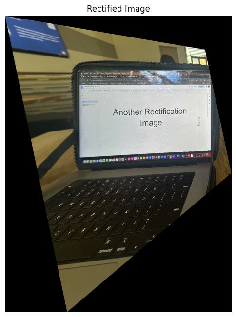

IMAGE WARPING and MOSAICING
The goal of this project was to experiment with different aspects of image warping and create a seamless image mosaic by registering, projective warping, resampling, and compositing multiple images.
Overview
In this project, I implement image stitching and rectification techniques to create panoramic images and rectify planar surfaces in images. The key steps involve recovering homographies, warping images, performing image rectification, and blending images into a mosaic.
Step 1: Shooting and Digitizing Pictures
I started by capturing two photographs of 3 scenes that have a significant overlap, ensuring a good basis for mosaicing. I also ensured a significant overlap of 40% to 70% between each photo to facilitate registration. I took these photos of the stadium and sunset while on a run., the photo inside the stadium during the NC State game.


Figure 1: Photos captured for mosaicing


Figure 1: Photos captured for mosaicing


Figure 1: Photos captured for mosaicing
Step 2: Recovering Homographies
To align the images, I computed homographies by manually selecting point correspondences between pairs of images. I developed a function to calculate the 3x3 homography matrix H using the least-squares method, given more than four point correspondences. Establishing accurate correspondences was crucial to avoid instability in the transformation.
# Compute homography matrix H
H = computeH(points_img1, points_img2)
Figure 2: Recovered homography matrix illustration
Step 3: Warping Images
Once the homographies were calculated, I used them to warp each image to align with the reference image. I implemented an image warping function using inverse warping and ensured resampling was smooth to avoid aliasing. I used grid interpolation techniques for an accurate warping result, and I rectified images to verify the homography correctness.
# Warp image using homography H
warped_im, alpha_mask, x_min, y_min, transformed_corners = warpImage(im, H)


Figure 3: First example of image warping and rectification


Figure 3: First example of image warping and rectification
Step 4: Blending Images into a Mosaic
After warping the images into alignment, I blended them into a single mosaic. I initially tried averaging, but since it wasn't working, I ended up using the Laplacian pyramid functions from the previous projects to avoid harsh edges and create a smooth blend.
Figure 1: Photos captured for mosaicing
Figure 4: Image mosaic blending process
I also did it again on a couple more images
Figure 1: Photos captured for mosaicing

Figure 4: Image mosaic blending process
This next one didnt work out as well due to the difference in lighting from the two images/p>
Figure 1: Photos captured for mosaicing
Figure 4: Image mosaic blending process
Bugs and Challenges
During the implementation, I encountered some challenges:
- Misalignment of Images: Initially, the images were not aligning correctly in the mosaic due to incorrect offset calculations. I resolved this by computing the overall bounding box of both images and adjusting the offsets accordingly.
- Point Selection Issues: Simultaneous point selection on both images caused confusion and incorrect point mapping. I modified the point selection process to be sequential, ensuring accurate correspondence between points.
- Broadcasting Errors: While blending images, I faced broadcasting errors due to mismatched array shapes. Adjusting the indexing and ensuring compatible shapes resolved this issue.
Conclusion
By implementing homography estimation, image warping, and blending techniques, I successfully created panoramas and performed image rectification. This project demonstrates fundamental concepts in computer vision and image processing.